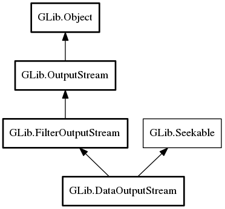

DataOutputStream
Object Hierarchy:
Description:
Data output stream implements OutputStream and includes functions for writing data directly to an output stream.
Namespace: GLib
Package: gio-2.0
Content:
Properties:
Creation methods:
Methods:
Inherited Members:
All known members inherited from class GLib.FilterOutputStream

All known members inherited from class GLib.OutputStream
All known members inherited from class GLib.Object
All known members inherited from interface GLib.Seekable